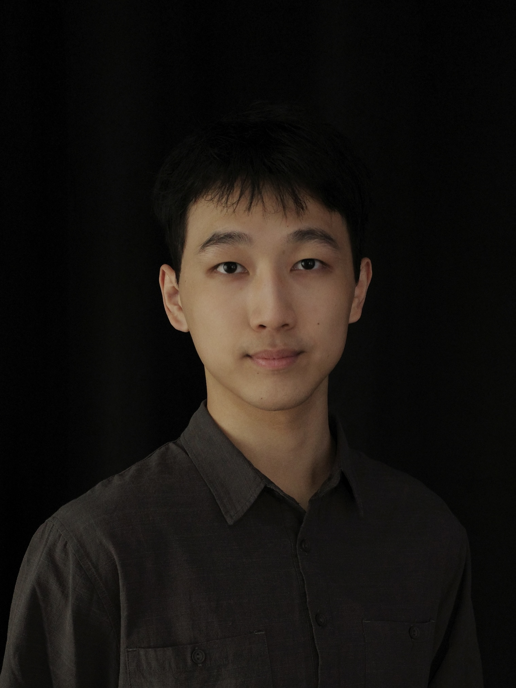

Qijing WANG (王麒景)
Ph.D. Candidate
Department of Computer Science and Engineering
The Chinese University of Hong Kong
Email: qjwang21 [at] cse.cuhk.edu.hk


Biography
Qijing Wang is currently a Ph.D. candidate at The Chinese University of Hong Kong supervised by Prof. Evangeline F.Y. Young. He graduated with B.Eng. in Automation from South China University of Technology in 2021. His research interests are primarily in machine learning for EDA, including physical design, design for manufacturability, and design space exploration.
Publications
( )
)
Conference Papers
-
[C11] Qijing Wang, Wing Ho Lau, Tsung-Yi Ho, Martin D.F. Wong, Evangeline F.Y. Young, "Dr. Guide: AI-Guided Detailed Routing", ACM/IEEE International Symposium on Machine Learning for CAD (MLCAD), Santa Cruz, CA, USA, Sept. 8-10, 2025.
-
[C10] Qijing Wang, Martin D.F. Wong, Evangeline F.Y. Young, "POAgent: A Multi-Agent Controller Towards Adaptive Parameter Optimization", International Conference on Knowledge Science, Engineering and Management (KSEM), Macao SAR, China, August 4-7, 2025.
-
[C9] Qijing Wang, Liang Xiao, Evangeline F.Y. Young, "AI-assisted Routing", ACM International Symposium on Physical Design (ISPD), Austin, Texas, USA, March 16-19, 2025.
-
[C8] Bangqi Fu, Lixin Liu, Qijing Wang, Yutao Wang, Martin D.F. Wong, Evangeline F.Y. Young, "Fast Dynamic IR-Drop Prediction with Dual-path Spatial-Temporal Attention", IEEE/ACM Design, Automation and Test in Europe (DATE), Lyon, France, March 31-April 2, 2025.
-
[C7] Qijing Wang, Jinwei Liu, Martin D.F. Wong, Evangeline F.Y. Young, "A Multi-agent Generative Model for Collaborative Global Routing Refinement", Great Lakes Symposium on VLSI (GLSVLSI), Tampa Bay Area, FL, USA, June 12-14, 2024.
-
[C6] Qijing Wang, Xiaopeng Zhang, Martin D.F. Wong, Evangeline F.Y. Young, "ControLayout: Conditional Diffusion for Style-Controllable and Violation-Fixable Layout Pattern Generation", Great Lakes Symposium on VLSI (GLSVLSI), Tampa Bay Area, FL, USA, June 12-14, 2024.
-
[C5] Tianji Liu*, Qijing Wang*, Lixin Liu, Fangzhou Wang, Evangeline F.Y. Young, "On Advanced Methodologies for Microarchitecture Design Space Exploration", Great Lakes Symposium on VLSI (GLSVLSI), Tampa Bay Area, FL, USA, June 12-14, 2024.
-
[C4] Qin Luo, Xinshi Zang, Qijing Wang, Fangzhou Wang, Evangeline F.Y. Young, Martin D.F. Wong, "A Routability-Driven Ultrascale FPGA Macro Placer with Complex Design Constraints", IEEE International Symposium on Field-Programmable Custom Computing Machines (FCCM), Orlando, FL, USA, May 5-8, 2024.
-
[C3] Fangzhou Wang, Qijing Wang, Bangqi Fu, Shui Jiang, Xiaopeng Zhang, Lilas Alrahis, Ozgur Sinanoglu, Johann Knechtel, Tsung-Yi Ho, Evangeline F.Y. Young, "Security Closure of IC Layouts Against Hardware Trojans", ACM International Symposium on Physical Design (ISPD), Virtual Conference, March 26-29, 2023.
-
[C2] Qijing Wang, Martin D.F. Wong, "WaferHSL: Wafer Failure Pattern Classification with Efficient Human-Like Staged Learning", IEEE/ACM International Conference on Computer-Aided Design (ICCAD), San Diego, CA, USA, Oct. 30-Nov. 3, 2022.
-
[C1] Qijing Wang, Bentian Jiang, Martin D.F. Wong, Evangeline F.Y. Young, "A2-ILT: GPU accelerated ILT with spatial attention mechanism", ACM/IEEE Design Automation Conference (DAC), San Francisco, CA, USA, Jul. 10-14, 2022.
Selected Honors & Awards
-
2nd Place Award in ICCAD 2024 Contest on Scalable Logic Gate Sizing Using ML Techniques and GPU Acceleration , 2024
-
3rd Place Award in MLCAD 2023 Contest on FPGA Macro-Placement , 2023
-
3rd Place Award in ISPD 2023 Contest on Advanced Security Closure of Physical Layouts , 2023
-
2nd Place Award in ICCAD 2022 Contest on Microarchitecture Design Space Exploration, 2022
-
3rd Place Award in ISPD 2022 Contest on Security Closure of Physical Layouts , 2022
-
Full Postgraduate Studentship at CUHK, 2021 - 2025
-
Outstanding Graduate of SCUT, 2021
-
Finalist Award in 2020 Mathematical Contest In Modeling on Problem C , 2020
Selected Experiences
Graduate Intern, @Cadence Design Systems
-
May 2023 - Nov. 2023, San Jose, CA, USA
-
Machine learning group for Cerebrus intelligent chip explorer
Reviewer / External Reviewer
-
ACM/IEEE Design Automation Conference (DAC)
-
IEEE/ACM International Conference on Computer-Aided Design (ICCAD)
-
IEEE Transactions on Computer-Aided Design of Integrated Circuits and Systems (TCAD)
-
Integration, the VLSI Journal
Teaching
-
Spring 2023, CSCI 1020: Hands-on Introduction to C++
-
Fall 2022, CSCI 3190: Introduction to Discrete Mathematics and Algorithms
-
Spring 2022, ENGG 2780A: Statistics for Engineers
-
Fall 2021, CSCI 3190: Introduction to Discrete Mathematics and Algorithms